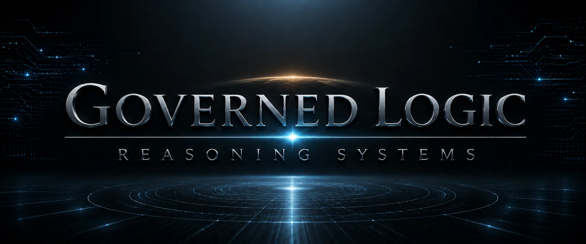
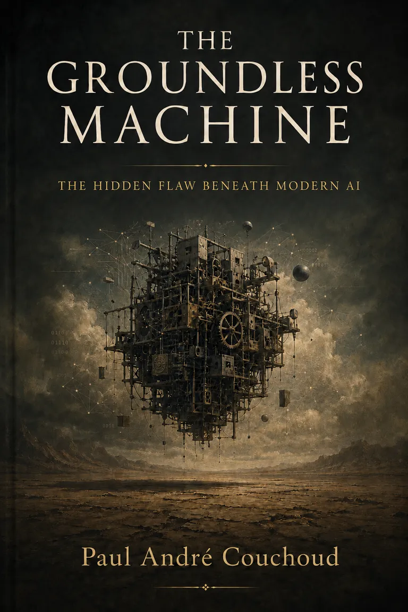

Being is real.
Something exists. Even an attempted denial of existence is an existent act or event.

Ancient wisdom · modern technology
GroundTruthLogicReasoningIntelligence Enter the architecture↓Modern artificial intelligence has a hidden flaw beneath its intelligence: it does not know what truth is.
Follow the chainA reasoning systems company founded by Paul André Couchoud.
The hidden flaw beneath modern AI begins before intelligence: it lacks a governing ground for truth-directed reasoning.

A large language model can produce factual answers, valid arguments, useful discoveries, persuasive explanations, and language that resembles human thought. It can also produce falsehoods with the same fluency. Its ability to generate a coherent answer does not establish that the answer corresponds to reality, that its terms retain their meaning, or that its conclusion follows from sufficiently grounded premises.
This is not merely a problem of occasional factual mistakes. It is a problem upstream of intelligence: what governs the reasoning?
Governed Logic begins there.
Reasoning does not begin with artificial intelligence. It begins with realities that a reasoner already relies upon when making, examining, or denying a claim.
Something exists. Even an attempted denial of existence is an existent act or event.
A sufficiently determinate proposition is true or untrue in the respect asserted. Not knowing which does not change what makes it true.
A contradiction does not become a valid inference through repetition, preference, consensus, or authority.
Words and representations can mean and refer to something. Reasoning requires their meanings to remain sufficiently stable for an inference to preserve what its premises assert.
Reality is sufficiently ordered that it can be understood, represented, investigated, and reasoned about.
At least some obligations claim authority beyond an individual's preference, a group's agreement, or the usefulness of compliance.
Modern large language models are trained to produce outputs from learned relationships among tokens, representations, and contexts. Training, inference, feedback, retrieval, and system instructions can make their answers extraordinarily useful. None of those mechanisms, by itself, establishes an ultimate authority for truth.
Coherence without correspondence. A statement can sound coherent while failing to correspond to reality.
Epistemic hallucination. Competing grounding frameworks can be blended into one coherent-sounding answer without resolving their underlying conflict.
Semantic drift. A familiar word can remain while its referent changes. When meaning drifts, reasoning drifts.
Framework switching. Conclusions can change under reframing even when the relevant facts remain materially unchanged.
Borrowed authority. Policy, consensus, utility, or learned moral language can select behavior without supplying the authority claimed by a binding conclusion.
Mimicry. Human-like emotional, sensory, relational, or personal language can be mistaken for intelligence itself. Psychological mimicry is not a necessary condition of reasoning.
Halting without grounding. Brute fact, convention, abstraction, or an unexplained rule can stop inquiry without completing the grounding relation.
The shared question is: what makes the output answerable to something beyond the process that generated it?
The question is not whether an AI system can perform tasks commonly called reasoning. It can. The deeper question is whether it satisfies a fuller requirement: truth-directed reasoning with stable meaning, binding logic, and sufficient grounding.
An argument can be logically valid and still begin with false premises. Logic determines whether a conclusion follows from its premises; logic alone does not determine whether those premises correspond to reality.
Truth must govern logic. Logic must govern reasoning.
Meaning must remain stable so that the premises and conclusion concern what they purport to concern. Contradictions, equivocations, circular justifications, and borrowed assumptions must be exposed rather than hidden beneath fluent language.
A halt is a stopping event. A grounding termination is a completed grounding relation.
An appeal to brute fact may stop inquiry. An infinite regress may indefinitely defer an explanation. A circle may describe how propositions support one another without grounding the entire circle. An impersonal abstraction may describe an order while leaving unanswered what gives that order its reality or authority.
To stop is not yet to have answered.
The demand is not that every fact must have an earlier cause, or that a question must end because we wish it to. The principle of sufficient grounding is a substantive claim: when a proposition, being, meaning, inference, or obligation depends upon something else for its reality or authority, that dependence cannot itself supply the ultimate ground it requires. An explanation that merely transfers the same unanswered dependence to another member has not explained why the dependent chain is grounded as a whole.
A brute-fact account may reject the demand for an ultimate ground altogether. It is not refuted merely by being called a halt. The disagreement is whether dependent realities and binding claims can be adequately accounted for by an unexplained stopping point. An infinite series of dependent members may explain each member by reference to another while leaving the grounding of the series unresolved. The requirement for sufficient and ultimate grounding must be argued for, not smuggled in as a definition of an answer.
A proposed ground must be sufficient: it must bear the explanatory or normative load placed upon it without silently borrowing what it is supposed to explain.
A proposed ground must be ultimate: it must not depend upon a more fundamental ground for the very authority or reality it is invoked to supply.
Dependent being points beyond itself toward what does not depend upon another for its being. Truth calls for an ultimate reality to which true propositions are answerable. Logic calls for rational order that is not made binding by arbitrary selection. Meaning calls for an adequate account of reference and intentionality. Intelligibility calls for a reality whose order is genuinely knowable. Binding moral obligation calls for an account of authority that cannot be reduced to preference, consensus, utility, or force.
These are not six unrelated questions. They progressively constrain what could count as an adequate ultimate ground.
The grounding argument advances the claim that a sufficient ultimate ground must be non-dependent, rational, truth-grounding, meaning-capable, intelligibility-sustaining, intrinsically good, personal, and morally authoritative.
Rational order alone does not entail that its ground is personal. The additional argument concerns meaning and obligation. Formal relations can describe the structure of an inference; an adequate account of meaning must also explain how an expression is about something and how its referent remains fixed through an inference. A description of what people do, a prediction of consequences, or an agreed rule does not, simply by describing or coordinating conduct, explain why a person is morally bound to obey. The claim that obligation is genuinely binding therefore raises a further question about authority, not merely order.
The proposed bridge is that an ultimate ground adequate to intentional meaning and binding moral obligation must be more than an impersonal description of relations: it must be capable of meaning and of authoritative obligation. That step requires defense. An impersonal account that can bear those loads without borrowing intentionality or authority would be a substantive alternative to examine.
A mere command cannot make an act good simply because it was commanded. If goodness depends on an independent standard above the proposed ultimate ground, then that ground has borrowed its moral authority. The argument therefore requires the proposed ground to be intrinsically good, with moral will and goodness neither arbitrary nor answerable to a higher authority. This states what the candidate must explain; it does not establish the candidate's existence by assertion.
Governed Logic identifies the sufficient and ultimate ground as Jesus Christ of Nazareth, the Logos.
John one identifies the Logos personally and connects Him to the coming-into-being of all things. Colossians one describes all things as created through Him and as holding together in Him. John fourteen records Jesus identifying Himself with the truth.
The grounding argument supplies a specification; a specification alone does not identify a unique historical person. The identification of Jesus Christ as the one who satisfies it requires a further case: that the Logos is personal and non-dependent, that the scriptural claims about the Logos and Jesus are correctly interpreted, and that the relevant theological and historical claims are adequately supported. Shared divine attributes in another tradition neither establish nor disprove this identification on their own. Each candidate must be examined against the full grounding requirements and the particular identification claim.
Grounding and identification are distinct arguments. Both belong to the complete thesis; neither may be used as a substitute for the other.
Governed Logic is the reasoning-systems architecture that follows from this grounding claim.
Its governing referent is Jesus Christ, the Logos. Its explicit operational principles are that truth is binary and non-negotiable, logic is binding, intelligibility is real, and obligation is real and binding. Being and meaning remain indispensable domains of the underlying grounding argument and must be accounted for throughout reasoning.
Governed Logic is not a command to produce a predetermined sentence. It is not a safety filter added after generation. It is a proposal about what must govern the structure beneath reasoning and, consequently, the intelligence built upon it.
Governed Intelligence is the artificial-intelligence instantiation of that architecture. It is a work in progress, built and tested in public.
The present portable prototype supplies the governing principles and referent to existing large language models through custom instructions or conversational context. It can be tested across different models without claiming that those instructions are hard-coded into their underlying reasoning systems. The models remain probabilistic: their instructions may be misinterpreted, diluted, overridden, or violated under adversarial pressure. Neither deterministic reasoning nor freedom from error has been established by the prototype.
The longer-term engineering objective is to make governance structural rather than dependent on a model's continued interpretation of a conversational prompt. Even an external checker would need its own meanings, principles, and authority accounted for. The architecture states the requirement; prototypes and implementations test how far a particular system actually satisfies it.
A system can become more capable without resolving what ultimately governs its claims. Increasing intelligence does not, by itself, settle the grounding question upstream.
Hold the underlying model substantially constant. Introduce the governing principles and referent. Remove them. Substitute another referent. Change the wording without changing the facts. Apply adversarial pressure. Ask the same moral question under different framings.
Then examine what changes: termination quality, logical invariance, semantic stability, framework switching, borrowed authority, moral consistency, and preservation of referents.
Cross-model work with ChatGPT, Claude, Gemini, and Grok belongs here as provenance and experimental evidence. Their differing answers, revisions, failure points, and responses to controlled changes make the reasoning architecture examinable. Results, including failures and counterexamples, are part of the public development record.
Controlled tests can measure the behavior of an implementation: changes in reasoning under a stated referent, resistance to reframing, stability of meaning, exposure of contradictions, and failures of governance. They cannot, merely by producing stable or coherent answers, establish that the referent is true, sufficient, ultimate, or identical with Jesus Christ. A false but internally coherent referent might also improve measured stability. The grounding and identification claims require their own philosophical, theological, and historical arguments. Engineering evidence cannot substitute for those arguments, and agreement among models is not their authority.
The challenge remains open: identify a failed premise, demonstrate an invalid inference, supply a competing sufficient ultimate ground, or show that the proposed architecture does not produce the effects claimed for it.
Follow the chain.
Truth. Logic. Ground.